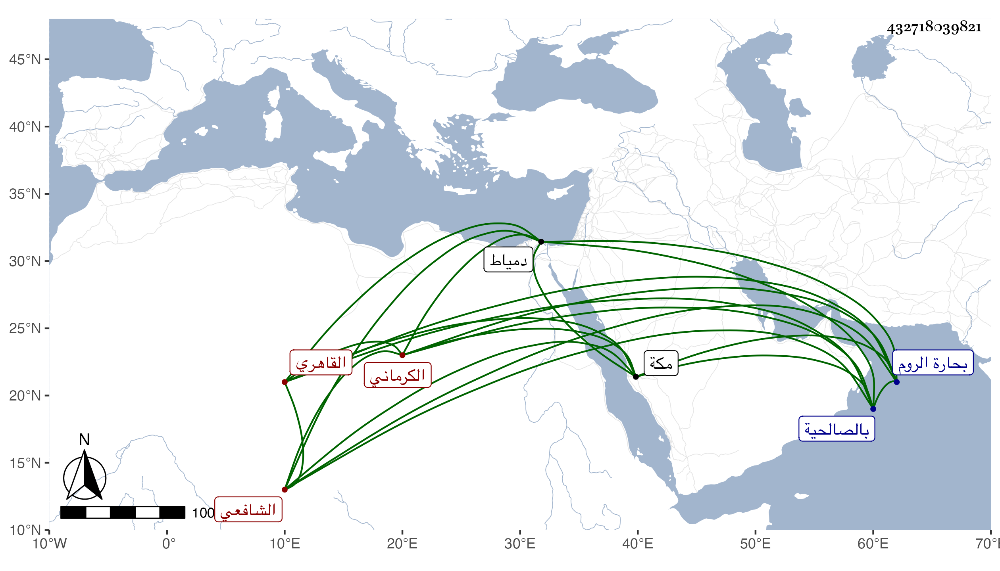

0902Sakhawi.DawLamic.ITO20230111-ara1.EIS1600.432718039821
Biography ID: 432718039821
1275
يوسف بن يحيى بن محمد بن يوسف بن علي بن محمد بن سعيد الجمال بن التقي بن الشمس الكرماني الأصل القاهري الشافعي الماضي أبوه وجده وولده يحيى . ولد في صفر سنة إحدى وثلاثين بحارة الروم وأمه فتاة لأبيه ومات أبوه وهو صغير بعد أن أسند وصيته للشهاب بن يعقوب ونشأ يتيما فقرأ القرآن عند البرهان المنزلاوي والعمدة والحاوي وألفية النحو عرض على جماعة كشيخنا وابن الديري بل حضر بعض مجالس أولهما في الإملاء وغيره وأخذ في الفقه وغيره عن يس نزيل المؤيدية وكذا لازم أحد صوفيتها الشهاب المسيري بحيث كان جل انتفاعه به ثم لازم الشمس البامي في أشياء منها شرح جده على البخاري وحضر اليسير من دروس المناوي وابن البلقيني بل سمع عليهما وعلى ابن الديري وخلق معنا وهو ممن سمع جزء الأنصاري وغيره بالصالحية وختم البخاري بالظاهرية بل قرأ على الرشيدي في الشفا وغيره وكتب على الجمال بن حجاج ، ودخل دمياط والفيوم للنزهة بل حج في سنة ست وخمسين ورافقنا في البحر واشتد الاختصاص به ولازمني فيما قرأته هناك على أبي الفتح المراغي والزين الأميوطي والتقي بن فهد والبرهان الزمزمي والشهاب الشوائطي بمكة وكذا بالأماكن التي توجهنا إليها كمنى وغارثور وحراء وعمرة الجعرانة وبعد رجوعه أكثر من السماع معنا ومع غيرنا ، ثم حج في البحر أيضا سنة اثنتين وستين ثم في موسم سنة أربع وستين وجاور التي تليها ثم في أثناء سنة ثلاث وتسعين وجاور بقيتها مع سنة أربع ، وكتب بخطه الكثير وجمع من تخاميس البردة ما ينيف على ستين ، مع فضيلة وحشمة وعقل وتقنع وتودد وتواضع ومحاسن وربما ارتفق به أبو الطيب الأسيوطي وكان زائد الاختصاص به بحيث نزله في جهات ونعم الرجل .
